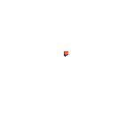

<div class="reaction" fxLayout="column" fxLayoutAlign="center center" fxLayoutGap="30px">
  <div class="icon-react" fxLayout="column" fxLayoutAlign="center center">
    <mat-icon [ngClass]="isBookmark ? 'bookmark' : null" (click)="bookmark()">bookmark</mat-icon>
    <span class="label">{{count.bookmark}} bookmarks</span>
  </div>
  <div class="icon-react" fxLayout="column" fxLayoutAlign="center center">
    <mat-icon [ngClass]="isLike ? 'like': null" (click)="like()">favorite</mat-icon>
    <span class="label">{{count.like}} likes</span>
  </div>
  <div class="icon-react" fxLayout="column" fxLayoutAlign="center center">
    
    <span class="label">{{count.clap}} claps</span>
    
  </div>
</div>